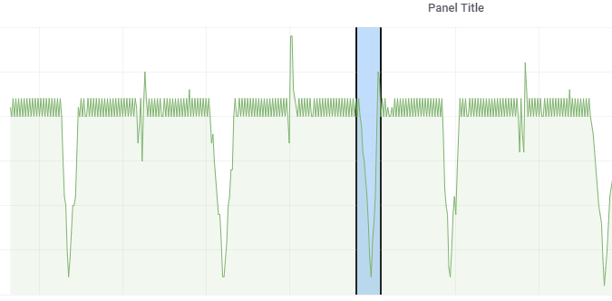
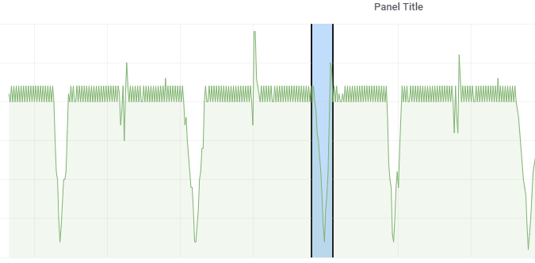

Analytic Units
Adding Analytic Units:
1) Click on 'Add Analytic Unit' button to add an analytic unit.
2) Type in desired analytic unit name into provided 'Name' field.
3) Choose pattern type from the 'Type' dropdown menu. Pattern types explained below.
4) Click 'create' button.
Labeling segments:
1) Click on the chart symbol  to enter labeling mode.
2) Hold down 'Ctrl' button on your keyboard and hold down left mouse button while dragging to label segments manually. Release LMB to finish labeling the segment.
3) After all of the needed segments are labeled click on the chart symbol again to exit labeling mode.
Hastic will now start learning, and after a short while you will see the results on your graph.
Available labeling patterns:
1) General: description pending

2) Peaks: description pending
3) Troughs: description pending
4) Jumps: description pending
5) Drops: description pending
6) Custom: description pending
to enter labeling mode.
2) Hold down 'Ctrl' button on your keyboard and hold down left mouse button while dragging to label segments manually. Release LMB to finish labeling the segment.
3) After all of the needed segments are labeled click on the chart symbol again to exit labeling mode.
Hastic will now start learning, and after a short while you will see the results on your graph.
Available labeling patterns:
1) General: description pending

2) Peaks: description pending
3) Troughs: description pending
4) Jumps: description pending
5) Drops: description pending
6) Custom: description pending